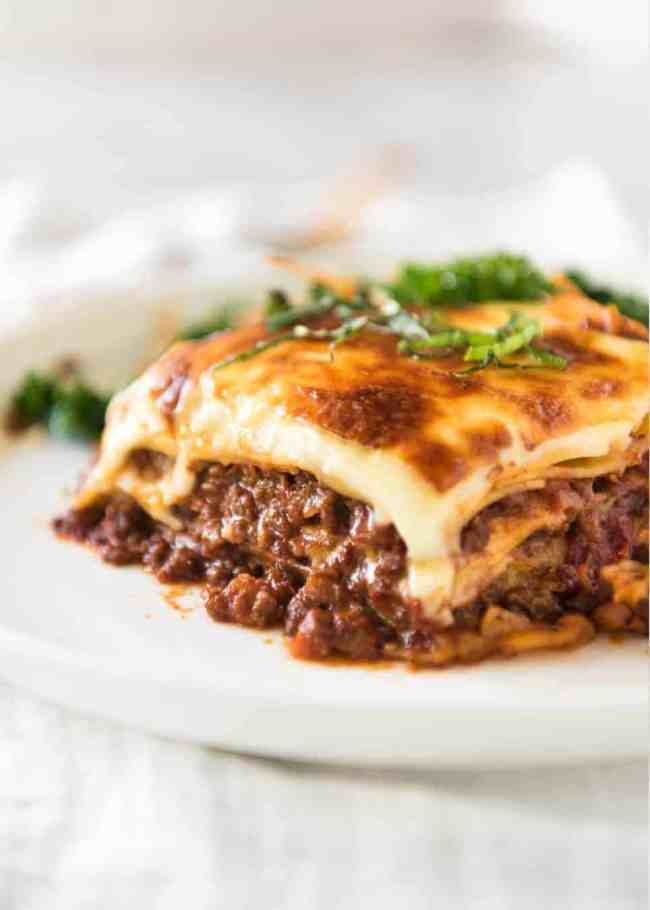

Lasagna

Description
One of the most loved foods in the world is finally here! This is a traditional Italian Lasagna, made the Italian way with layers of slow cooked Bolognese ragu and cheese sauce.
No ricotta ‑ that is the American-Italian version.
Lasagna, lasagna. How I love thee! It is possibly one of the most loved foods in the whole wide world, and understandably so.
There is just something so sentimental about lasagna, so comforting. It evokes images of of gatherings with family and friends all around the world.
It is the sort of food that is like a big warm hug, and so more-ish you want to keep digging in until you burst.
Ingredients
For the meat sauce:
- Onion, garlic, carrot and celery for the flavour base, a soffrito
- Beef
- Canned tomato and tomato paste
- Red wine for extra flavour!
- Seasonings ‑ beef bouillon cubes (stock cubes), bay leaves, thyme, oregano, Worcestershire sauce
For the white sauce:
For assembling:
Steps
- Smear a bit of meat sauce on the base first ‑ stops the lasagna sheets from sliding around;
- Layer 1 ‑ top with meat sauce, bit of white sauce
- Layer 2 ‑ lay out more lasagna sheets, then top with more meat sauce and more white sauce
- Layer 3 ‑ repeat again, lasagna sheets, meat sauce then white sauce; and
- Topping ‑ cover with lasagna sheets, pour over remaining white sauce then sprinkle with cheese.